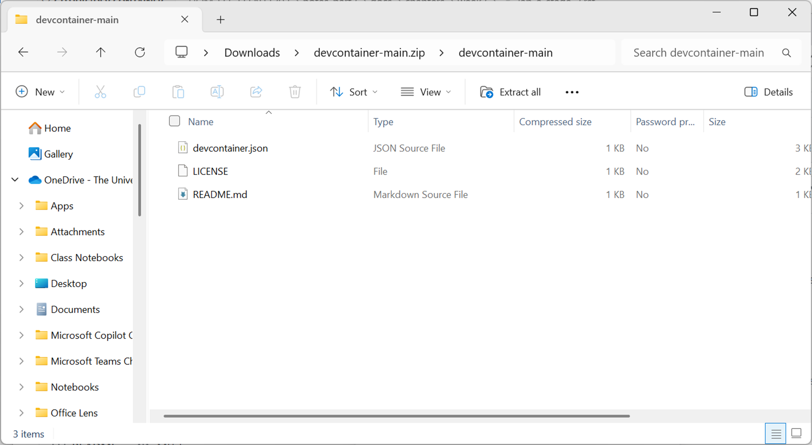
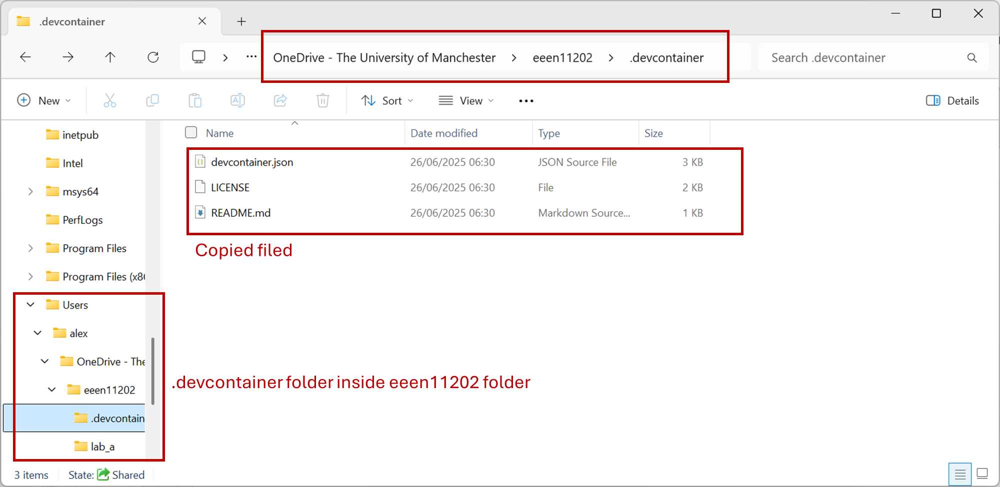
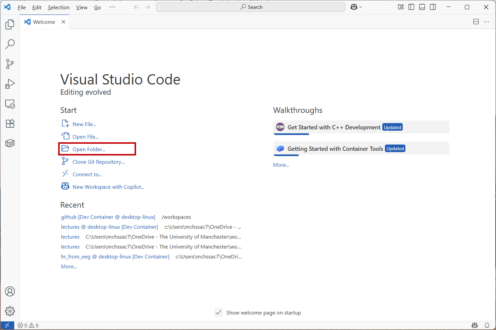
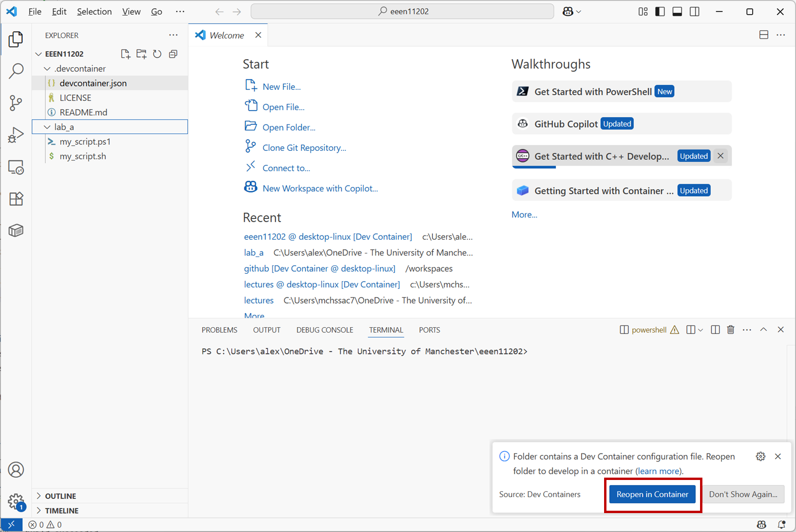
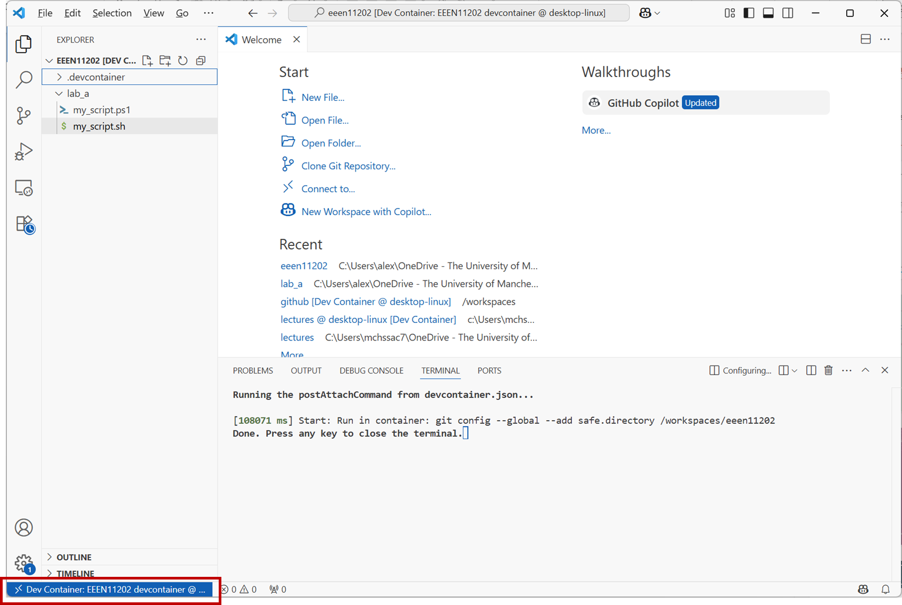

2.2.2. Stage 2¶
In Stage 2 of the lab we’re going to look at version control. We’ll use this a lot as we move through the course.
For this part of the lab, and for the rest of the course, you VSCode and Docker installed on your computer. Follow the instructions for getting this on your computer..
Start Docker before continuing with the below.
2.2.2.1. Initial setup¶
We first need to do some initial setup. In Stage 1 of the labs we interacted with your computer, using the command line to control it. We wrote some simple scripts to automate some tasks. The important point is that we were interacting directly with your computer.
For our more general programming, we’re going to use our own dedicated computer that sits on top of your computer, as discussed in environment control. Doing this can be a little confusing, you have a virtual computer in addition to the physical computer, You need to keep track of which is which, but it’s easy once you’re used to it. It gives the benefit of us being able to control the settings on the computer used for programming. We can ensure everyone is using the same tools, and the same versions of the tools. This is really important when working in a large programming team, it gives a common base for everyone to be working from.
You don’t need to do very much to set this up, you just need to make sure some files are in the correct places. Again, it can be a bit fiddly to get right at first - things won’t work if you miss a step. Once it’s going it should be quite robust though.
In Stage 1 of the lab you should have made a folder
C:\Users\alex\OneDrive - The University of Manchester\eeen11202
/Users/alex/OneDrive - The University of Manchester/eeen11202 (macOS)
or
/home/alex/OneDrive - The University of Manchester/eeen11202/ (Linux)
If not, make that folder now. Inside this, make a folder called .devcontainer.
Danger
It is important that the folder name is correct. .devcontainer including the .. Things won’t work correctly if this name is wrong.
Then, download our devcontainer from GitHub. Click on Code and then Download ZIP.

This will download a file with a .zip extension. You should be able to double click to go inside this (you may need to do this twice). Eventually, you’ll see three files that you downloaded. On Windows this looks like:
{kind=link}

Copy and paste these files into the .devcontainer folder you made earlier. That is, select them with the mouse, click the copy button, navigate to your folder, and then press the paste button. Done correctly, your files and folders should look like the below (shown for Windows only).
{kind=link}

Then, start VSCode. On the Welcome screen select Open Folder...
{kind=link}

Select the folder
C:\Users\alex\OneDrive - The University of Manchester\eeen11202
/Users/alex/OneDrive - The University of Manchester/eeen11202 (macOS)
or
/home/alex/OneDrive - The University of Manchester/eeen11202/ (Linux)
The devcontainer may open automatically, or if not VSCode will display a message Reopen in Container. Click on this if it appears.
{kind=link}

It can take a few minutes for the devcontainer to start, especially the first time as various files have to be downloaded from the Internet. Once successful, you should see the bottom left hand corner has changed, it will now say it’s connected to a devcontainer.
{kind=link}

This indicates that you’re using our virtual computer rather than your real computer. You’re still using the same files, just editing them with a different computer. For all parts of the course from now on, you want this blue Dev Container to be displayed in the bottom left of the screen before you start doing any programming.